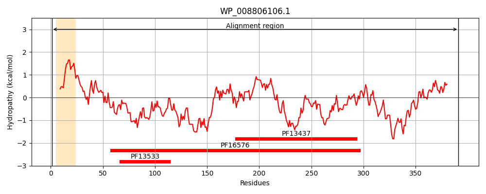
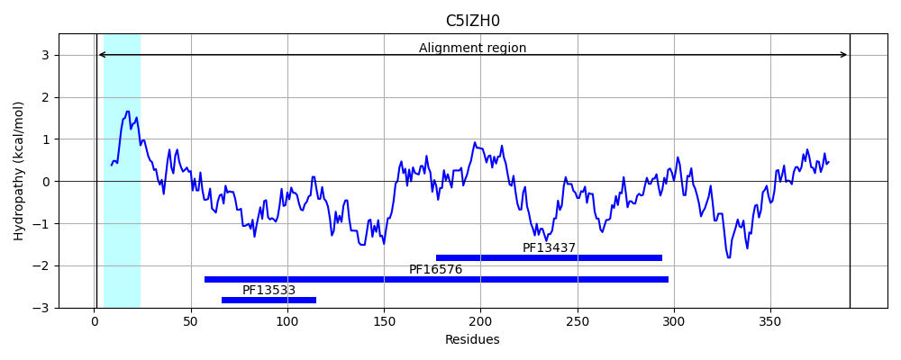
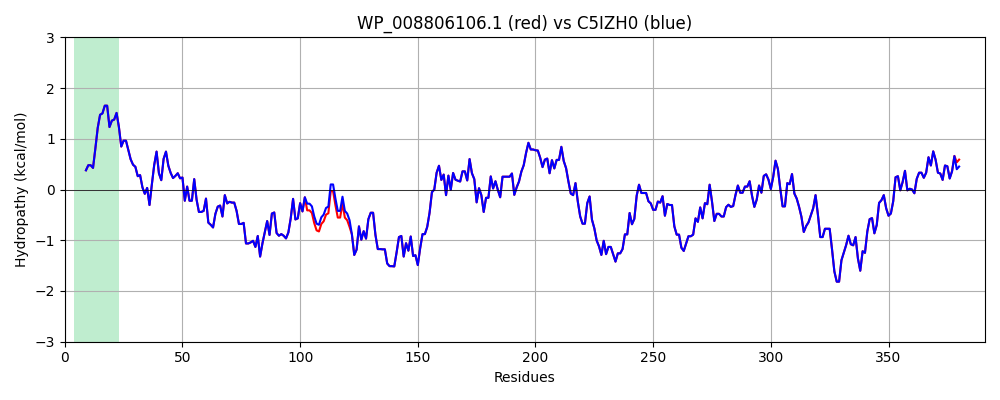

Hit Accession: C5IZH0
Hit TCID: 2.A.6.2.47
Hit Description: gnl|BL_ORD_ID|2558 gnl|TC-DB|C5IZH0|2.A.6.2.47 Acriflavin resistance protein AcrA OS=Klebsiella pneumoniae GN=oqxA PE=4 SV=1
Mach Len: 391
e:0.000000
Query TMS Count : 1
Hit TMS Count: 1
TMS-Overlap Score: 1.000000
Predicted Substrates:CHEBI:23888;drug
BLAST Alignment:
Score: 1944 , Bit scores: 753 bits, E-value: 0.0e+00, Alignment length: 391, Percentage identity: 99
Query: 1 MSLQKTWGNIHLTALGAMMLSFLLVGCDDSVAQNAAPPAPTVSAAKVLVKSISQWDSFNGRIEAVESVQLRPRVSGYIDKVNYTDGQEVKKGQVLFTIDDRTYRAALEQAQATLARAKTQASLAQSEANRTDKLVHTNLVSREEWEQRRSAAVQAQADIRAAQAAVDAAQLNLDFTKVTAPIDGRASRALITSGNLVTAGDTASVLTTLVSQKTVYVYFDVDESTYLHYQNLARRGQGASSDNQALPVEIGLVGEEGYPHQGKVDFLDNQLTPSTGTIRMRALLDNSQRLFTPGLFARVRLPGSAEFKATLIDDKAVLTDQDRKYVYIVDKDGKAQRRDITPGRLADGLRIVQKGLNPGDSVIVDGLQKVFMPGMPVNAKTVAMTTSAALN 391
MSLQKTWGNIHLTALGAMMLSFLLVGCDDSVAQNAAPPAPTVSAAKVLVKSISQWDSFNGRIEAVESVQLRPRVSGYIDKVNYTDGQEVKKGQVLFTIDDRTYRAALEQAQA LARAKTQASLAQSEANRTDKLVHTNLVSREEWEQRRSAAVQAQADIRAAQAAVDAAQLNLDFTKVTAPIDGRASRALITSGNLVTAGDTASVLTTLVSQKTVYVYFDVDESTYLHYQNLARRGQGASSDNQALPVEIGLVGEEGYPHQGKVDFLDNQLTPSTGTIRMRALLDNSQRLFTPGLFARVRLPGSAEFKATLIDDKAVLTDQDRKYVYIVDKDGKAQRRDITPGRLADGLRIVQKGLNPGDSVIVDGLQKVFMPGMPVNAKTVAMT+SA LN
Sbjct: 1 MSLQKTWGNIHLTALGAMMLSFLLVGCDDSVAQNAAPPAPTVSAAKVLVKSISQWDSFNGRIEAVESVQLRPRVSGYIDKVNYTDGQEVKKGQVLFTIDDRTYRAALEQAQAALARAKTQASLAQSEANRTDKLVHTNLVSREEWEQRRSAAVQAQADIRAAQAAVDAAQLNLDFTKVTAPIDGRASRALITSGNLVTAGDTASVLTTLVSQKTVYVYFDVDESTYLHYQNLARRGQGASSDNQALPVEIGLVGEEGYPHQGKVDFLDNQLTPSTGTIRMRALLDNSQRLFTPGLFARVRLPGSAEFKATLIDDKAVLTDQDRKYVYIVDKDGKAQRRDITPGRLADGLRIVQKGLNPGDSVIVDGLQKVFMPGMPVNAKTVAMTSSATLN 391 | Protein Hydropathy Plots: |
|---|
|  |  |
Pairwise Alignment-Hydropathy Plot:
|
|---|
|  |